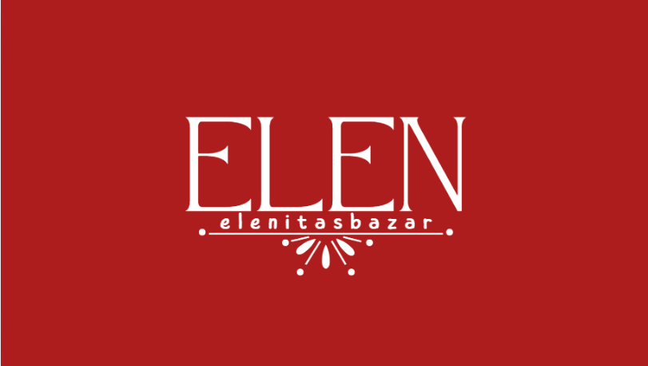

¿COMO SE ORIGINO LA IDEA?
Surgio la idea por falta de dinero, quería dinero para mi misma
,Todo empezo con unas pulceras que mi mamá tenia, pedi venderlas y me la lleve a la prepa
para ver si se me da lo de las ventas y ver cuanto gano, y si gane bien nomas que se me empezo
acabar la mercancía, entonces decidi vender mas haya, más cosas, más categorías. Y si vendi más
pero surgio un problema gigante en mi vida que hizo que pusiera en pausa mis planes de ventas, pasaron
dias y 1 mez y 2 y volvi a vender pero insta y ahora me va un poco mas mejor, decidi crear mas redes, más ideas
más productos para que se vuelva un verdadero bazar.